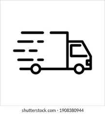

¿Quiénes somos?
Somos Lavandería Tinto, un espacio moderno donde cada prenda recibe el mejor cuidado. Combinamos tecnología, experiencia y calidez humana para ofrecerte un servicio confiable, eficiente y personalizado.
Servicios
- ✅ Lavado por kilo
- ✅ Planchado profesional
- ✅ Limpieza en seco
- ✅ Tratamiento para ropa blanca
- ✅ Servicio exprés con entrega en el día
¿Cómo funciona?
Solicitá tu servicio
Elegí el tipo de lavado, planchado o limpieza en seco que necesitás.
Nos encargamos
Procesamos tus prendas con tecnología moderna y cuidado profesional.

Retirá o recibí
Pasás a buscar o te lo enviamos. ¡Listo para usar!
Comunicate con nosotros
Lo que dicen nuestros clientes
“Excelente atención y rapidez. Mi ropa quedó impecable.”
— Carla G.
“El lugar es limpio, moderno y muy cómodo. ¡Recomendado!”
— Martín R.
“Me encantó el servicio exprés. Dejé mi traje y lo retiré perfecto en pocas horas.”